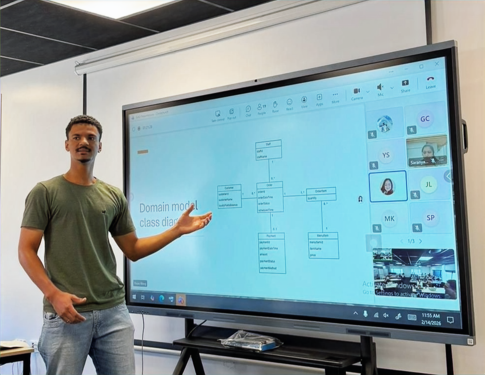

End-to-End Information System Analysis & Design — Web-Based Ordering Platform

As part of my Master of Business Informatics, I contributed to the full analysis and design of a web-based restaurant ordering and operations management system.
The objective of the project was to analyse and redesign the operational workflow of a restaurant environment by developing a structured information system capable of supporting both front-of-house and kitchen operations. The system aimed to reduce manual order handling, improve operational visibility, and minimise service delays during peak hours.
The analysis phase focused on identifying real operational bottlenecks such as long queues, communication gaps between staff and kitchen teams, and the lack of a centralised view of order status. Based on these findings, the system design introduced a digital ordering and workflow management solution to streamline restaurant operations.
My contribution covered several stages of the systems analysis and design lifecycle, including:
- Defining the system vision and clarifying the project scope
- Applying event decomposition techniques to identify external, temporal, and state-driven events
- Developing use case models to represent system interactions and user behaviour
- Designing domain model class diagrams to represent entities and relationships
- Mapping operational processes to improve workflow visibility and service coordination